It would be wonderful if every decision
could be reduced to a single "either-or" choice that could be solved
with a simple if-else statement; it would sure make
programming easier!
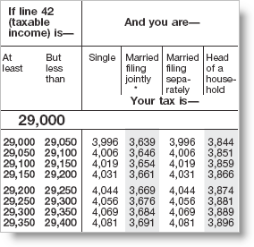
Most of the time, though, things are more complex, and you'll need to write selection statements involving three, four, five or more alternatives. Just writing a program to calculate your income tax, for instance, using the tax tables, involves dealing with literally hundreds of different alternatives.To solve these kinds of programs you'll need to learn how to use one of Java's multi-way branching statements:
- sequential
if-else-ifstatements - nested
ifstatements - the
switchstatement
Let's start by looking at sequential if statements, which
are used when you have a sequence of related
comparisons.
Sequential If Statements
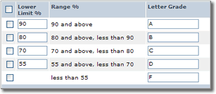
One sequential comparison that you're all familiar with is the "letter grading scale" used to assign marks in school, (including in this course), similar to that shown in the table to the right.Typically, your letter grade is based on a percentage representing the weighted average for all of the work you've done during the term. In the example shown here, for instance, those who earn 90% or greater receive 'A's, those with percentages less than 90%, but at least 80% earn 'B's, and so on.
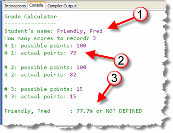
To explore sequential comparisons I'll use a simple example program namedGradeCalculator.java which you'll find in this week's
code folder. Open it up and follow along in DrJava if you want
to experiment as we go.
If you run the program, you'll see that it:
- asks for the student's name and the number of scores to record.
- requests the possible points and the points earned for each of the scores.
- calculates and prints the percentage score and the letter grade for the student.
As you can see here, I've run the program for a student named Fred. I entered two 100-point test scores and a 15-point quiz score and the program correctly calculates Fred's percentage score (79.1%). However, it doesn't yet handle the letter grade. That's our next stop.
Before we get there, though, let's take a look at what we've got; we'll read through the program together, and then we'll look at several different ways we can implement the code for calculating the letter grade.
The GradeCalculator Program
Here's how the program works. Some of the parts in this section (like loops) have not been covered yet, but you should be able to understand the gist of it by reading my explanation:
- Lines 19 and 20 print a heading for the program,
and then lines 23 and 24 create a
Stringvariable namedstudentand has the user initialize it by reading the student's name. Lines 25 and 26 create anintvariable namednumScoresand has the user initialize it by reading the number of scores to record.
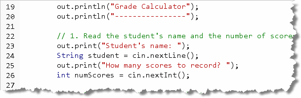
- Lines 29 and 30 define the accumulators for the
program. As each score is entered, that score will be added to
the
pointsPossibleandpointsEarnedvariables. I made these variablesdoubleinstead ofintso the teacher could assign half points.
- Next, we need to get the input for each exam,
quiz or lab, which we'll do by using the
forloop. Notice that we repeat the input actions a fixed number of times, based on the value of the variablenumScores:
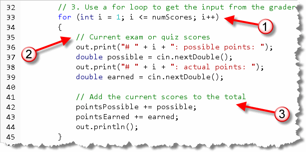
After all of the input is done, the points earned and the possible points are added up and the result printed. - After the loop, line 48 uses the possible points and
the points earned to calculate the student's percentage grade.
This is done by calling the
getPercentage()function, which we'll look at shortly.
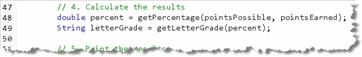
Then, line 49 defines theStringvariableletterGradeand initializes it by calling the functiongetLetterGrade()passing thepercentvariable initialized in the previous line. - Finally, the
main()method ends by printing the formatted output in the statement that spans lines 52-53. The output consists of the student's name, left-aligned in a 40-character-wide field, the student's percentage grade (formatted to 1 significant decimal), and the letter grade.
Now, let's look at the two functions.
The getPercentage() Function
The getPercentage() method returns the
student's current numeric grade, as a percentage as the
name implies. There function takes two double parameters
representing the possible points and the points that the student has earned.
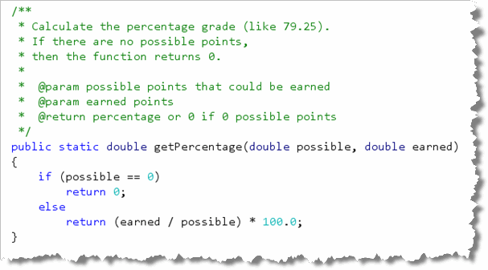
The method uses a simple if-else
statement to avoid the problem of returning the NaN value
when dividing by floating-point zero if a student
hasn't yet taken any exams and 0.0 is passed as the
possible parameter. (If the parameter were an
int instead of a double, you'd still
need the if-else statement do avoid the runtime
error that occurs with an integer divide-by-zero.)
In the else clause, the percentage returned is
multiplied by 100.0 so that we'll deal with numbers like 79.0,
not .79.
The getLetterGrade() Function
The final portion of code we want to look at is
getLetterGrade() which returns the letter grade based on
the student's current percentage score. As you can see here, the function
currently returns the phrase "NOT DEFINED":
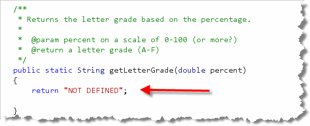
Now let's look at several techniques for implementing the
getLetterGrade() function.
Method 1: Independent if Statements
The first technique is to use the logical operators to combine
several conditions using independent if statements.
Here's what the code would look like in this version of
the function:
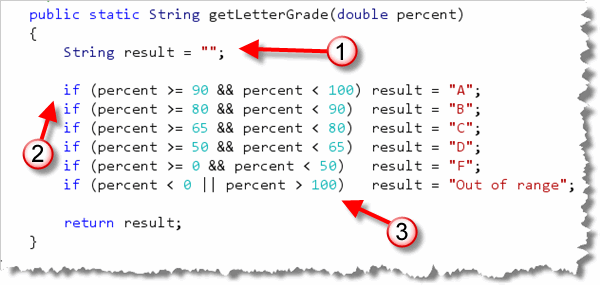
Analysis
Here's how the method works:
- Since this is a
Stringfunction, aStringoutput variable namedresultis created and initialized to the emptyString. Then, the literal "NOT DEFINED" in thereturnstatement is replaced with the variableresult. - Next, the current numeric percentage is
compared against each range, using the && operator
to check the lower and upper bound for the range. I've used the
percentage cutoffs for a common course. (Since each
ifbody contains only a single statement, I've also used the single-line formatting technique that I mentioned in the last unit.) - Finally, before returning the result, the function makes sure that any invalid input is reported as well.
While this solution is correct, it's also longer than it needs to be and it's quite inefficient. Each time the function is called, all six Boolean selection conditions are tested, even after the correct one has been found.
The problem is, the solution uses independent
if statements, while the conditions themselves are
actually interdependent. If someone gets an "A", then it is
not possible for them to also, and at the same time, get an "F".
Independent if statements are designed for processing
conditions where each condition could be independently true,
and not really affect any other condition, like the code you'd use
to process the checkboxes on a form like that shown here.
With a form like this, the user may select any number of options,
(or none at all), but each option doesn't affect the others. That
means you must check each one, and the only way to do
that is by using independent if statements.
Method 2: Using Multiple Selection
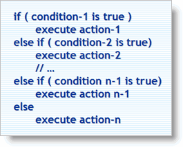
A better solution, when you need to select one course of action from many possible alternatives (which is the case here), is to employ what Rick Mercer at Arizona State calls the "Multiple Selection Algorithmic Pattern", shown here. An "algorithmic pattern" is simply a recipe for solving a particular category of problem. This particular pattern is also often called a ladder style
if statement, because each of the conditions are formatted
one under the other, like the rungs on a ladder. It is also sometimes
called an if-else-if statement. (Note though that the
else if keywords are not combined into a single
elseif, as in some other languages, such as
Visual Basic, or the elif keyword in Python.)
Here's the code for this second version of getLetterGrade(),
using the multiple-selection (or sequential if) pattern :
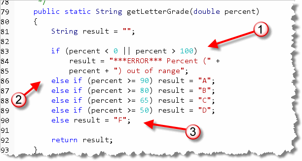
Analysis
- With the multiple-selection pattern, we need to move our error checking to the beginning of the routine from the end, since each test depends on the one that precedes it. If we left the error checking at the end of the method, it would never be executed, and the method would return an incorrect value. In the example shown here, I've used concatenation to display the percent value that causes the problem, along with the error message.
- On the following lines, only the lower bounds of each
category is tested. By the time we reach line 86, we already know
that the percentage falls between 0% and 100%, so we only have
to check if it is at least 90% to assign the value for an "A".
The same pattern continues on lines 87 through 89. On line 87, we know that the percentage is less than 90, since we just checked it on the previous lines. So, we don't need to check it again, like we did with the independent
ifexample. - Finally, the last "rung" in the ladder doesn't need an
ifportion. The only thing left is the range from 0 to 49, so you can use a plainelse.
A Pitfall to Watch For
While the multiple-selection pattern is much more efficient than
the independent if statements, each of the statements
is dependent on the one that comes before it. That means that
the order of the statements is significant.
If you switch the order of the "A" and "B" tests, for instance, like this:
else if (percent >= 80) result = "B";
else if (percent >= 90) result = "A";
all of those students who should
have gotten "A"s, will get "B"s instead, since a score of 95 matches
the condition (percent >= 80) and that condition is
now encountered before the condition that tests for an "A".
The test for an "A" will never be executed.
Nested If Statements
As you just saw, you can code decisions involving multiple alternatives in two different ways:
- by writing independent
ifstatements that combine their differentbooleanconditions using the AND and the OR operators. - by arranging your
ifstatements in a ladder-like sequence of related, dependentifstatements.
A third way to do the same thing is through nesting.
Nesting means that one if statement is
embedded or nested inside the body of another
if statement, much like the traditional Russian
nesting dolls, shown here.
The nested if statement
can appear in the body of the if portion of an
if-else statement, in the body of
the else portion, or inside both.
Calculating Taxes
Nested if statements are used whenever you need to
test for different levels of decision making, rather than
a set of purely sequential tests. If you're one of those fortunate
folks making more than a hundred thousand dollars a year, for instance,
you'll need to calculate your taxes using the following formula,
instead of using the tax tables:
| Filing Status : Single | Filing Status: Married Filing Jointly | ||
|---|---|---|---|
| Taxable Income | Tax | Taxable Income | Tax |
| $100,000 ... $146,750 | 28% less $5,373 | $100,000 ... $117,250 | 25% less $6,525 |
| $146,751 ... $319,100 | 33% less $12,710.50 | $117,251 ... $178,650 | 28% less $10,042.50 |
| Over $319,100 | 35% less $19,092.50 | $178,651 ... $319,100 | 33% less $18,975 |
| Over $319,100 | 35% less $25,357 | ||
| Filing Status : Married Filing Separately | Filing Status: Head of Household | ||
| Taxable Income | Tax | Taxable Income | Tax |
| $100,000 ... $159,550 | 33% less $9,487.50 | $100,000 ... $100,500 | 25% less $4,400 |
| Over $159,550 | 35% less $12,678.50 | $100,501 ... $162,700 | 28% less $7,415 |
| $162,701 ... $319,100 | 33% less $15,550 | ||
| Over $319,100 | 35% less $21,932 | ||
Suppose that you were single, with a taxable income of $159,750. To calculate your tax, you'd first locate the schedule for your filing status (Single), and then locate the bracket you fall into (the second). Your tax would be $159,750 x 33% less $12,710.50.
If you wanted to write a program to perform this calculation,
you'd need to follow a similar set of steps. You'd first need to use a set
of sequential if statements to determine
which set of calculations to use, like this:
if (status == SINGLE)
{
// calculate the tax for a single taxpayer
}
else if (status == MARRIED_JOINT_FILE)
{
// calculate for a joint-filing married taxpayer
}
else if (status == MARRIED_SINGLE_FILE)
{
// calculate for a single-filing married taxpayer
}
else if (status == HEAD_OF_HOUSEHOLD)
{
// calculate for a head-of-household taxpayer
}
Then, nested inside the body of each portion of each if
statement, you'd test the various income levels, like this:
{
if (taxableIncome <= SINGLE_BRACKET1)
tax = taxableIncome * SINGLE_RATE1 - SINGLE_EX1;
else if (taxableIncome <= SINGLE_BRACKET2)
tax = taxableIncome * SINGLE_RATE2 - SINGLE_EX2;
else
tax = taxableIncome * SINGLE_RATE3 - SINGLE_EX3;
else if (status == MARRIED_JOINT_FILE)
{
// calculate the tax for a married taxpayer
}
Nesting Pitfalls: The Dangling else
When you nest one if statement inside of another,
the nested if statement won't always have an else
portion. When this occurs, it's possible for the else clause
of the enclosing block to inadvertently "attach itself" to the inner
if statement. This is known as the dangling else
problem.
Here's an example. In the code shown in the screenshot, the programmer
intended to allow children 12 and under to "get in free" (the else
branch of the first if statement. A nested if statement
was intended to provide a "senior citizens" discount as well.
Everyone else was supposed to pay full price.
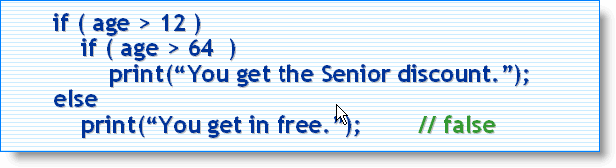
When the code is run, though, the result is exactly the opposite. Because theelse clause automatically attaches itself to the closest unmatched
if statement, the young kids all pay full price, while all of
the pre-senior adults get in for free.
Avoiding this problem is really pretty easy: whenever you use nested if
statements, always enclose the body of both the if and else
portions in braces. The braces act like a "fence" that keeps the else
portions where they belong.